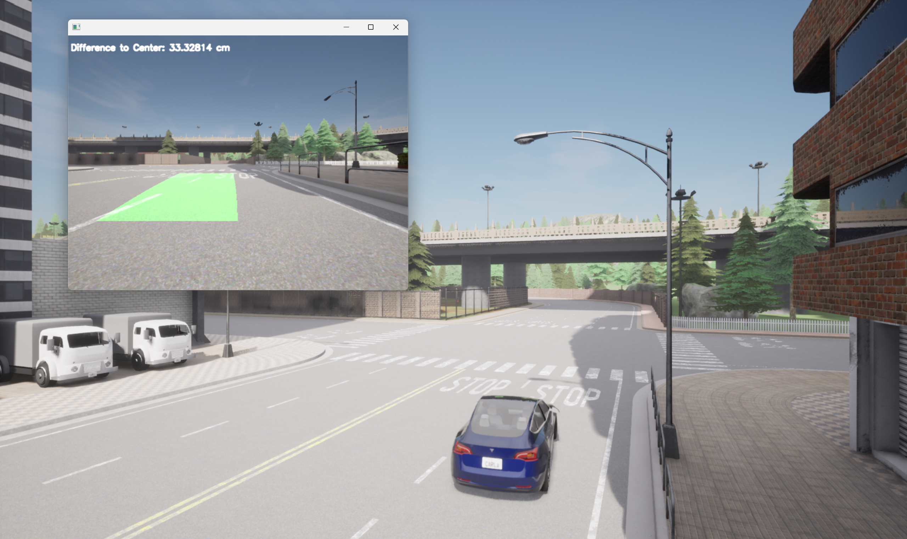
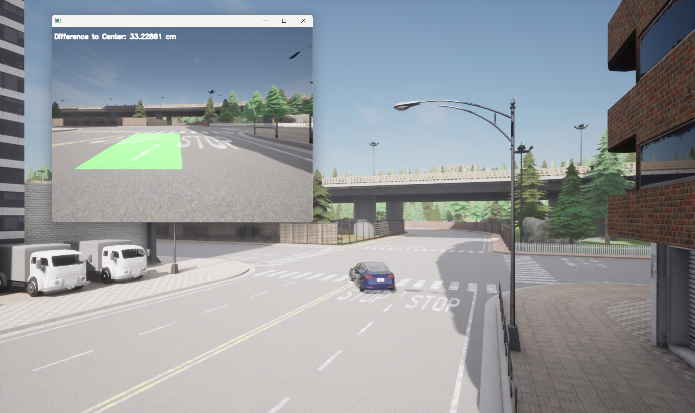

自动驾驶车道保持系统
目录
项目简介
Active Lane Keeping Assistant 是一个基于计算机视觉的自动驾驶车道保持系统。通过传统图像处理技术实现鲁棒的车道线检测，结合自适应 PID 控制器实现车辆自动跟踪控制。项目使用 CARLA 模拟器进行真实环境仿真测试。
核心优势： - 🎯 鲁棒检测：自适应阈值 + 边缘检测融合，适应复杂光照条件 - 🚀 智能控制：增益调度 + 模型预测控制，实现精准转向 - ⚡ 实时性能：GPU 加速 + 并行处理，保证实时性要求
功能特性
| 特性 | 描述 |
|---|---|
| 🚗 车道检测 | 基于 OpenCV 的传统图像处理，无需深度学习 |
| 🎯 多控制器支持 | Simple / P / PD / PID / MPC 控制器 |
| 🔄 自适应阈值 | Otsu 方法自动计算最佳阈值，适应光照变化 |
| 🔍 边缘检测融合 | 颜色检测 + Canny 边缘检测，提高鲁棒性 |
| 🧠 状态记忆 | 历史数据预测，防止瞬间遮挡导致失控 |
| 📊 数据记录 | 支持 CSV、NumPy、JSON 多格式输出 |
| ⚙️ 配置化管理 | YAML 配置文件，集中管理所有参数 |
| 🚀 增益调度 | 根据速度动态调整 PID 参数 |
| 🤖 模型预测控制 | MPC 预测未来状态并优化控制序列 |
| ⚡ GPU 加速 | OpenCV GPU 并行处理，提升帧率 |
| 📈 性能监控 | FPS 统计、各步骤耗时分析 |
快速开始
环境要求
- Python: 3.10+
- CARLA Simulator: 0.9.13
- CUDA: 11.0+（可选，用于 GPU 加速）
- 操作系统: Windows / Linux / macOS
安装步骤
# 1. 克隆项目
git clone https://github.com/C2G-BR/Active-Lane-Keeping-Assistant.git
cd Active-Lane-Keeping-Assistant
# 2. 安装依赖
pip install -r requirements.txt
安装 CARLA 模拟器：
- 下载地址: CARLA 0.9.13
- 解压后运行 CarlaUE4.exe（Windows）或 CarlaUE4.sh（Linux）
运行方式
# 1. 启动 CARLA 模拟器（单独窗口）
# CarlaUE4.exe
# 2. 运行车道保持系统（默认使用 PID 控制器）
python src/main.py -id "test_run" -c pid -s 1000
# 3. 使用 MPC 控制器（推荐）
python src/main.py -id "mpc_demo" -c mpc -s 1000
# 4. 启用 GPU 加速
python src/main.py -id "gpu_run" -c pid --gpu -s 1000
运行效果
系统在 CARLA 模拟器中实现了实时车道检测和自动控制。车辆能够根据检测到的车道线自动保持在车道中心行驶，左上角实时显示距离车道中心的偏差（单位：厘米）。


核心技术
车道线检测
采用传统图像处理技术实现鲁棒的车道线检测：
- 图像预处理
- 颜色空间转换（BGR → HLS）
- 自适应阈值：Otsu 方法自动计算最佳阈值，适应不同光照条件
-
边缘检测融合：结合 Canny 边缘检测提高复杂场景鲁棒性
-
感兴趣区域提取
- 提取道路区域，减少计算量
-
支持动态 ROI 参数配置
-
透视变换
-
转换为鸟瞰视角，便于车道识别
-
直方图分析
-
定位车道边界位置
-
滑动窗口法
-
拟合车道曲线（二次多项式）
-
状态记忆机制
- 维护历史车道线数据
- 检测失败时使用历史数据预测
- 防止瞬间遮挡导致失控
控制器算法
支持多种控制器对比：
| 控制器 | 特点 | 适用场景 |
|---|---|---|
| Simple | 固定转向角度 | 简单场景演示 |
| P | 比例控制 | 基础平滑转向 |
| PD | 比例+微分 | 减少超调 |
| PID | 比例+积分+微分 | 标准控制 |
| PID-GS | 增益调度 PID | 高速场景 |
| MPC | 模型预测控制 | 最优控制 |
默认参数： - PID: P=0.65, I=0.00000002, D=0.034 - MPC: 预测步数=5, 控制时域=3
增益调度策略： - 低速（< 30 km/h）：P=0.8, D=0.02 - 中速（30-60 km/h）：P=0.65, D=0.034 - 高速（> 60 km/h）：P=0.5, D=0.05
配置说明
配置文件位于 src/config.yaml，支持以下配置项：
# 连接设置
connection:
server_ip: "127.0.0.1"
port: 2000
timeout: 10.0
# 仿真设置
simulation:
map: "Town05"
time_difference: 0.01
# 摄像头设置
camera:
image_height: 480
image_width: 640
fov: 110
x_offset: 2.5
z_offset: 0.7
# 车道检测设置
lane_detection:
use_adaptive_threshold: true # 使用 Otsu 自适应阈值
use_edge_detection: true # 启用边缘检测融合
canny_low: 50 # Canny 低阈值
canny_high: 150 # Canny 高阈值
max_lost_frames: 5 # 最大连续丢失帧数
# 控制器设置
controller:
default_controller: "pid_gs" # simple, p, pd, pid, pid_gs, mpc
tau_p: 0.65 # 比例参数
tau_i: 0.00000002 # 积分参数
tau_d: 0.034 # 微分参数
throttle: 0.3 # 油门值
mpc_prediction_steps: 5 # MPC 预测步数
mpc_control_steps: 3 # MPC 控制步数
# 性能设置
performance:
use_gpu: true # 使用 GPU 加速
parallel_processing: true # 启用并行处理
enable_profiling: true # 启用性能监控
# 运行设置
run:
default_steps: 1000
save_video: true
# 调试设置
debug:
show_error_plot: true
save_error_image: true
命令行接口
python src/main.py [-h] -id IDENTIFIER [-c {simple,p,pd,pid,pid_gs,mpc}]
[-s STEPS] [-a] [-t TOLERANCE] [-d] [-cfg CONFIG]
[--gpu] [--profile]
| 参数 | 说明 | 默认值 |
|---|---|---|
-id, --identifier |
运行标识（必须） | - |
-c, --controller |
控制器类型 | pid_gs |
-s, --steps |
运行步数 | 1000 |
-a, --adapt |
是否启用 Twiddle 自适应调参 | False |
-t, --tolerance |
调参容差 | 0.2 |
-d, --debug |
调试模式 | False |
-cfg, --config |
配置文件路径 | config.yaml |
--gpu |
启用 GPU 加速 | False |
--profile |
启用性能分析 | False |
示例：
# 使用增益调度 PID 控制器
python src/main.py -id "gs_pid_run" -c pid_gs -s 1000
# 使用 MPC 控制器并启用 GPU 加速
python src/main.py -id "mpc_gpu" -c mpc --gpu -s 1000
# 启用性能分析
python src/main.py -id "profile_run" -c pid --profile -s 500
项目结构
Active-Lane-Keeping-Assistant/
├── assets/ # 静态资源
├── docs/ # 文档和示例图片
├── img/ # 图像处理示例输出
├── src/ # 源代码
│ ├── assets/test/ # 测试数据
│ ├── data/ # 运行数据输出
│ ├── agent.py # 智能体控制器（含 MPC）
│ ├── config.yaml # 配置文件
│ ├── data_logger.py # 多格式数据记录
│ ├── lane.py # 车道检测模块（含 GPU 加速）
│ ├── main.py # 主入口
│ ├── mpc_controller.py # MPC 控制器实现
│ ├── performance.py # 性能监控模块
│ ├── recorder.py # 视频录制模块
│ └── world.py # CARLA 环境封装
├── .gitignore
├── README.md
└── requirements.txt
模块说明
| 模块 | 职责 |
|---|---|
main.py |
主入口，解析参数，协调运行 |
world.py |
CARLA 模拟器交互封装 |
agent.py |
控制器实现（Simple/P/PD/PID/PID-GS） |
mpc_controller.py |
模型预测控制器 |
lane.py |
车道线检测核心算法（含 GPU 加速） |
data_logger.py |
多格式数据记录 |
performance.py |
FPS 统计、耗时分析 |
recorder.py |
视频录制功能 |
数据输出
每次运行会在 src/data/{run_id}/ 目录下生成以下文件：
| 文件 | 格式 | 内容 |
|---|---|---|
{run_id}_data.csv |
CSV | 时间序列数据（误差、转向、油门、速度等） |
{run_id}_data.npy |
NumPy | 高效数值数组格式 |
{run_id}_metadata.json |
JSON | 运行元数据（控制器类型、参数等） |
{run_id}_summary.json |
JSON | 统计摘要（均值、标准差、RMSE等） |
{run_id}_error.jpg |
JPG | 误差曲线图 |
{run_id}_performance.json |
JSON | 性能统计（FPS、各步骤耗时） |
{run_id}.mp4 |
MP4 | 运行视频 |
性能优化
已实现的优化措施
| 优化项 | 实现方式 | 性能提升 |
|---|---|---|
| 自适应阈值 | Otsu 算法自动计算 | 适应不同光照 |
| 边缘检测融合 | 颜色 + Canny 检测 | 提高鲁棒性 |
| GPU 加速 | OpenCV CUDA 模块 | 2-3x 帧率提升 |
| 并行处理 | 多线程处理独立步骤 | 1.5x 帧率提升 |
| 增量更新 | 利用前帧结果初始化 | 减少计算量 |
| 时间预算控制 | 设置每帧最大处理时间 | 保证实时性 |
| 性能监控 | FPS 统计、耗时分析 | 便于瓶颈定位 |
性能指标
| 指标 | CPU 模式 | GPU 模式 |
|---|---|---|
| 处理帧率 | ~25 FPS | ~60 FPS |
| 单帧处理时间 | ~40 ms | ~16 ms |
| 车道检测延迟 | ~25 ms | ~10 ms |